6) GitHub Link included for the further code review
Topic Nr. 1
1) How to organize String with a 'for in range'?
2) We listed all the names of the months in orders in a tuple []. Then set up a fox loop with a variable x representing each name of the month. And set up a range between 0 and 12. So all the months can be listed once we print x. this example will show how we manipulate strings by modifying it with brackets, numbered order and when not numbered.
3) The following images of the Code before its run:
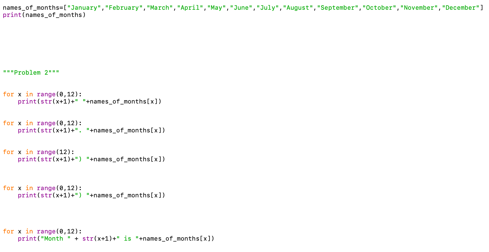
4) Images of Code after its run (output):
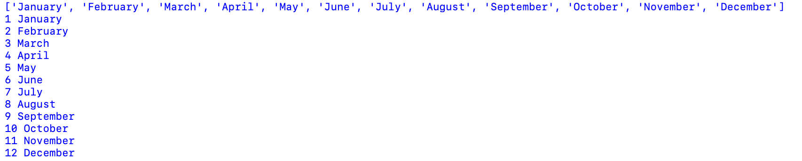
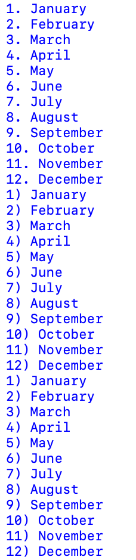
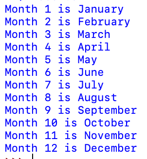
5) Explanation:
As you can see the first component of the code prints all twelve months in order without any brackets between the number of the month and the name of the month. The second image shows how months are numbered in order with a dot in between and the third option is with the brackets each number corresponding to that following month.
Whereas in the last image the string is printed before every name of the month is printed. There is a statement that the Month 1 for example is January as the name of the month. And the order continues down the line with each name of the month followed by 'the Month' statement.
1) How to use 'for in' and 'dictionary' as in nested loops ?
2) Developed a dictionary representing the list of Student names all represented by their corresponding registered courses. Will print a statement asking a question about how many students will fail one certain course.
3) The following images of the Code before its run:
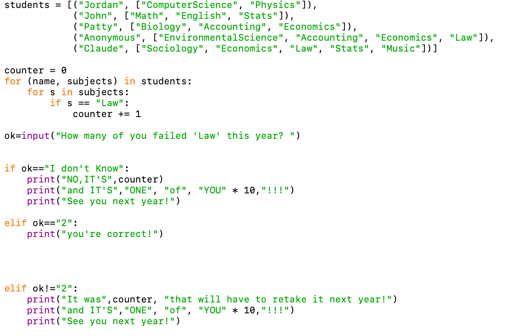
4) Images of Code after its run (output):
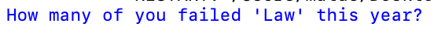
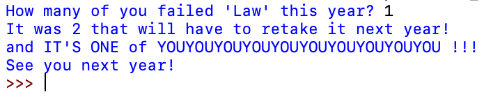
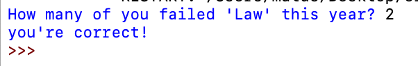
5) Explanation:
In the code you can see how the questions is being asked about how many students have failed Law course. And as you see if the answer is not 2, it will print a response statement saying that it's not that number, but it's 2 students who failed this course, and one more statement that one of those students is 'YOU'. It shows how 'for in' a subjects of dictionary can be manipulated, and can print a string multiple times.
if the answer is 2, then the conversation ends with the only statement 'correct'.
1) How do dictionaries work in Programming, and how are values assigned to its key?.
2) Wrote a code with an input asking for any random three names. Then will use those three names as a key, and will assign those keys to its corresponding values such as 'movies'. When printing the names and movies, will show how the values are printed next to its key. Like in this example the names of movies printed next to its key: name of the person.
3) The following images of the Code before its run:
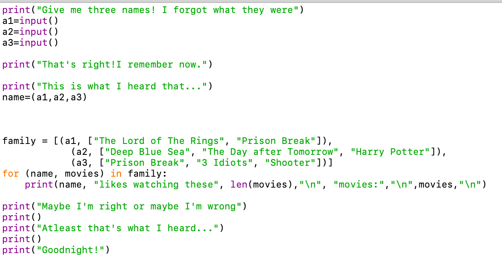
4) Images of Code after its run (output):
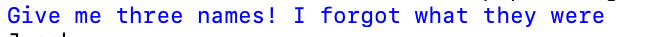
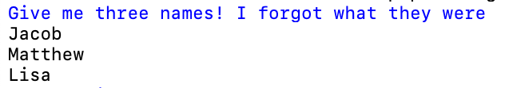
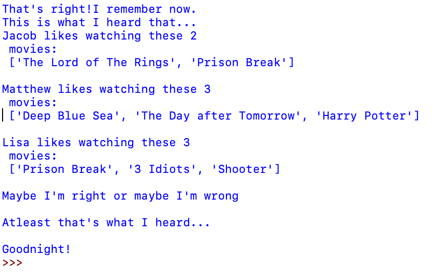
5) Explanation:
Firstly we see how the user input is requesting for any random three names. So we have given Jacob, Matthew and Lisa as those three names. Then the code is taking those name and generating the list of favorite movies which are the list of values for those names. It's all following the code. So then it prints us for example that 'Jacob likes watching these two movies'. And in such as a way it showcases how values are printed with their corresponding key, in this case; a name of a person.
1) How to set up a quick 'For in Loop with string' ?
2) Developed a set of data in a dictionary, have defined the string as the name of the month. And have defined the value as an integer representing the number of the month in a year. Assigned a variable named food, and places all of the data in the food variable. Then have defined that f will be in food. So when we print a statement it will print the string and all the data represented by f, which is food.
3) The following images of the Code before its run:
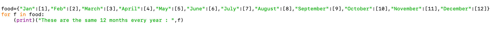
4) Images of Code after its run (output):
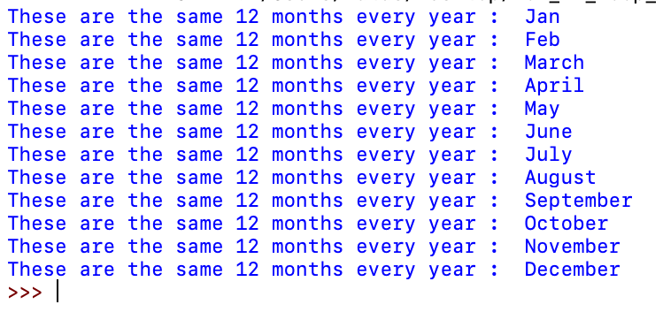
5) Explanation:
As you see in the image of the code that all the months are listed in the food variable followed by the number of the month. And we have assigned an f variable to a food variable. By writing 'for f in food'. Likewise because of this statement all the month-names and their numbers were printed as were expected.
1) How to calculate a simple hours worked/hourlyrate and miles-driven/gas-usage ?
2) Developed a short calculator at first to calculate the total number of miles driven per gas used. Have formatted with brackets the structure of the numbers given. Have used if/else loop to continue revising the answer if the answer is not good enough, or it' not the right answer. Similarly have applied same structure to figure out what was the number of miles driven over gas used. Have requested for the user input to provide those two numbers.
3) The following images of the Code before its run:
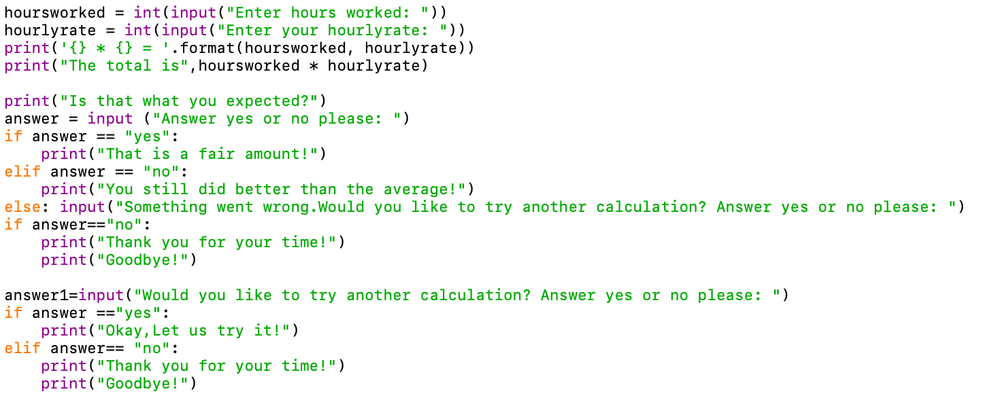
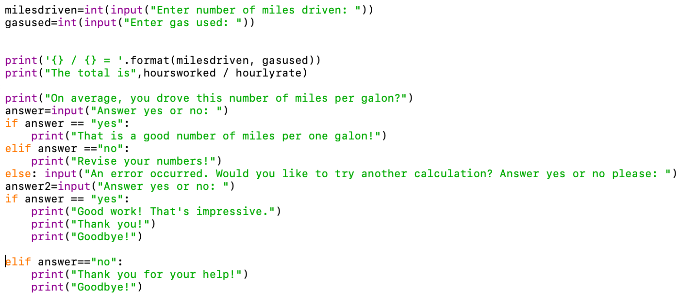
4) Images of Code after its run (output):
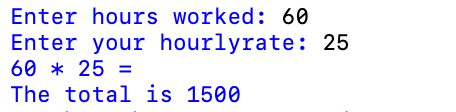
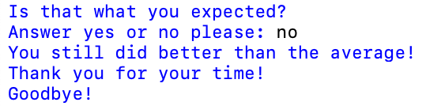
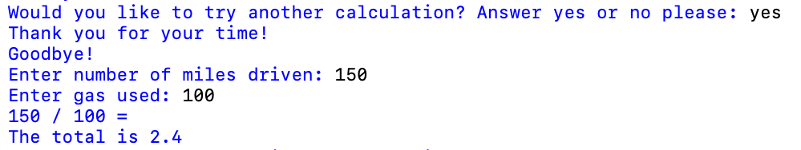
5) Explanation:
As you see in all images, have asked the user to provide any two numbers for both calculations. Then have taken those two numbers and performed a multiplication and division to find the answer for hours worked, and miles driven. Have continued the loop with user input responses if to revise the calculations or not to revise, if to revise,then to redo the calculations with different numbers, if not to revise, then end the loop and conversation with a 'Good bye!'.
1) How to create a def function and return its value ?
2) Firstly developed a name for def function which 'fun; for example. And created two variable: drink1, drink2. With these two variables when this function will be called upon, it will print the values for these two variables. But the values need to be printed when the def function is called upon.
3) The following images of the Code before its run:
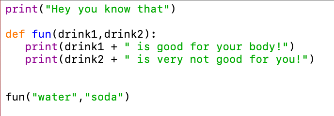
4) Images of Code after its run (output):
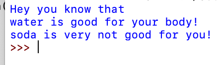
5) Explanation:
If you look at how the statement are printed inside the def function. the statement are printed before the def function is called. And the variable and its values are separated, firstly we have the variables: drink1 and drink2 printed. Then when we call upon those variable, we call onto the function fun(), and inside those parenthesis we have the values for those two variables, which is 'water' for variable drink1, and 'soda' for variable drink2. This is how def function is created with its variables, and how its values are printed.